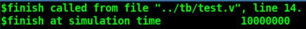
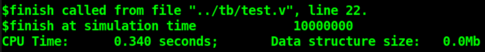
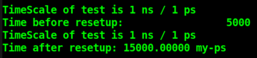
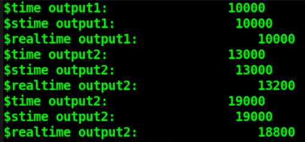
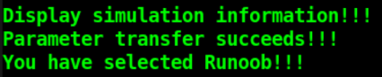

Control de simulación: $finish, $stop
| System tasks | Formato de llamada | Descripción de la tarea |
|---|---|---|
| Termina la simulación | $finish( type ) ; | Termina la simulación; el parámetro type permite elegir si se imprime información al salir de la simulación. type=0: sale directamente sin imprimir type=1: imprime el tiempo de simulación y la línea de ubicación de la sentencia type=2: imprime el tiempo de simulación, la ubicación, la memoria y el uso de tiempo de CPU |
| Pausar la simulación | $stop( type ) ; | Pausa la simulación; el formato de uso es el mismo que el de $finish. |
$finish y $stop tienen ambos la función de detener la simulación, pero todavía hay diferencias.
$finish finaliza la simulación actual. $stop pausa la simulación actual. Después de pausar, se puede continuar la simulación mediante la herramienta de simulación de Verilog o la línea de comandos; pero una vez finalizada la simulación, esta no puede continuar de ninguna manera. $stop es similar a la función de depuración por puntos de interrupción en C.
A continuación se utiliza una simulación para explicar la información de impresión correspondiente al tipo type.
Ejemplo
forever begin
#100;
if ($time >= 10000) $finish(0) ;
//if ($time >= 10000) $finish(1) ;
//if ($time >= 10000) $finish(2) ;
end
end
$finish(0): al salir de la simulación no se imprime información alguna.
$finish(1): al salir de la simulación imprime el tiempo de simulación y la información de la línea donde se encuentra $finish, como se muestra a continuación.
La precisión temporal del módulo test es ns, pero la precisión temporal del simulador es ps, por lo que la información de tiempo impresa difiere en 1000 veces.

$finish(2): al salir de la simulación no solo imprime el tiempo de simulación y la información de línea, sino también el tiempo de uso de la PC y el uso de memoria, como se muestra a continuación.

Formato de tiempo: $printtimescale, $timeformat
| System tasks | Formato de llamada y descripción | |
|---|---|---|
| Imprimir tiempo Unidad y precisión | $printtimescale( hierarchy ) ; | |
| Este system task imprime la información de timescale de acuerdo al siguiente formato TimeScale of ( hierarchy ) is 1 ( unit ) / 1 ( precision ) hierarchy es el nivel de acceso al módulo; puede omitirse, en cuyo caso imprime la información de timescale del módulo actual. | ||
| Establecer tiempo Unidad y precisión | $timeformat(unit_num, precision_num, suffix_string, min_field_width) | |
| unit_num, establece la unidad de tiempo; por defecto se basa en `timescale precision_num, establece el número de dígitos significativos de los decimales en la unidad de tiempo; el valor predeterminado es 0 suffix_string, establece la información del sufijo de tiempo, por ejemplo "ns", etc.; el valor predeterminado es vacío min_field_width, establece el número de caracteres ocupados por la información de tiempo; el valor predeterminado es 20 |
Cuando las tareas de visualización (como $display, $monitor, etc.) y las tareas de escritura en archivos (como $display, etc.) utilizan el formato "%t" para la salida de datos, $timeformat puede especificar el formato de salida de la información de la unidad de tiempo.
En $timeformat, unit_num utiliza un número con signo para especificar la unidad de tiempo; su correspondencia se muestra en la siguiente tabla:
| unit_num | Unidad de tiempo | unit_num | Unidad de tiempo |
|---|---|---|---|
| 0 | 1 s | -8 | 10 ns |
| -1 | 100 ms | -9 | 1 ns |
| -2 | 10 ms | -10 | 100 ps |
| -3 | 1 ms | -11 | 10 ps |
| -4 | 100 us | -12 | 1 ps |
| -5 | 10 us | -13 | 100 fs |
| -6 | 1 us | -14 | 10 fs |
| -7 | 100 ns | -15 | 1 fs |
Utilice el siguiente código para realizar una simulación simple de los dos system tasks de timescale.
Ejemplo
initial begin
# 10 ;
//precisión ps, 5 dígitos significativos en los decimales, sufijo de unidad muestra 'my-ps', ocupa 15 caracteres de longitud
$timeformat(-12, 5, " my-ps", 15) ;
end
initial begin
# 5 ;
$printtimescale() ;
$display("Time before resetup: %t", $time);
# 10 ;
$printtimescale() ;
$display("Time after resetup: %t", $time);
end
El log de la simulación se muestra a continuación.
A partir de la figura se puede comparar el formato de visualización del tiempo antes y después de la configuración de $timeformat.
Además, durante este proceso, timescale siempre ha permanecido sin cambios; $timeformat solo cambia el formato de visualización del tiempo.

Tiempo de simulación: $time, $stime, $realtime
| Llamada del system task | Descripción |
|---|---|
| $time | Devuelve un valor de tiempo entero de 64 bits |
| $stime | Devuelve un valor de tiempo entero de 32 bits |
| $realtime | Devuelve un valor de tiempo de tipo real, puede ser un número en coma flotante |
El código de simulación es el siguiente:
Ejemplo
#10;
$display("$time output1: %t", $time);
$display("$stime output1: %t", $stime);
$display("$realtime output1: %t", $realtime);
#3.2;
$display("$time output2: %t", $time);
$display("$stime output2: %t", $stime);
$display("$realtime output2: %t", $realtime);
#5.6;
$display("$time output2: %t", $time);
$display("$stime output2: %t", $stime);
$display("$realtime output2: %t", $realtime);
end
El log de la simulación se muestra a continuación.
Debido a que el tiempo de simulación es corto, $time y $stime no tienen diferencia.
Pero $realtime lee con precisión el tiempo de simulación de acuerdo con la precisión temporal actual, mientras que $time y $stime leen redondeando el tiempo actual según la precisión temporal.

Paso de parámetros por línea de comandos: $test$plusargs, $value$plusargs
Verilog también proporciona los system tasks interactivos $test$plusargs y $value$plusargs; durante la simulación se pueden pasar parámetros mediante la línea de comandos, lo que brinda una gran comodidad para la depuración de la simulación.
| System tasks | Formato de llamada | Descripción de la tarea |
|---|---|---|
| Paso de parámetros de cadena | $test$plusargs( str ) ; | Si los datos de cadena pasados por línea de comandos durante la simulación coinciden con str, el valor de retorno es 1; de lo contrario, es 0. |
| Paso de parámetros numéricos | $value$plusargs( str, var ) ; | Si los datos de cadena pasados por línea de comandos durante la simulación coinciden con str, el valor de retorno es 1; de lo contrario, es 0. Es necesario especificar dentro de str el tipo de la variable var pasada al módulo; el formato se puede consultar en la tarea de visualización $display. |
Al usar $test$plusargs( str ), solo se debe añadir "+str " en la línea de comandos de simulación.
Al usar $value$plusargs( str, var ), es necesario especificar dentro de str el tipo del valor al pasar el parámetro. Al pasar parámetros por línea de comandos, no se necesita agregar ninguna indicación sobre la base numérica; solo se debe mantener el valor en la base correspondiente. El formato de los parámetros pasados por línea de comandos debe basarse en el formato declarado por str en $value$plusargs.
A continuación se explica mediante una simulación:
Ejemplo
if ($test$plusargs("DISPLAY_CTRL")) begin
$display("Display simulation information!!!");
end
end
reg [1:0] display_sel ;
initial begin
if ($value$plusargs("INFO_SEL=%b", display_sel)) begin
$display("Parameter transfer succeeds!!!");
end
else begin
display_sel = 2'b0 ;
end
end
initial begin
#1 ;
if (display_sel == 2'b01)
$display("You have selected Runoob!!!");
else if (display_sel == 2'b10)
$display("You have selected Verilog!!!");
else if (display_sel == 2'b11)
$display("You have selected Me!!!");
else
$display("What do you really what???");
end
Agregue en la línea de comandos de simulación: +DISPLAY_CTRL +INFO_SEL=01
Entonces el log de la simulación es el siguiente; a partir de esto se puede ver que tanto el parámetro de cadena como el parámetro binario se pasaron correctamente.

Haz clic para compartir notas
<p style="font-size:14px;">¡Las notas deben ser una extensión del contenido de este artículo!</p><br> <p style="font-size:12px;"><a href="../tougao.html" target="_blank">Envío de artículos, haga clic aquí</a></p> <p style="font-size:14px;"><a href="./runoob-user-test-intro.html" target="_blank">Cómo obtener el código de invitación de registro</a></p> <h3 class="text-muted"><i class="fa fa-info-circle" aria-hidden="true"></i> Antes de compartir notas debe <a href=".." class="runoob-pop">iniciar sesión</a>.</h3> <p><a href="./runoob-user-test-intro.html" target="_blank">Cómo obtener el código de invitación de registro</a></p>